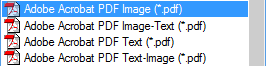

Now that we’ve done everything right and the recognition was successful, to which applications can we export the text results?
Each OCR package has its own list of supported applications, so we’ll only discuss the common output methods of the major OCR packages.
You can output documents to the clipboard, save the documents to an external file, send the recognized document by mail — as long as your e-mail client is MAPI compliant, it’ll work —, send the recognized documents to a “target application” or save them in “the cloud”.
Target applications may require some explanation: after the recognition, the recognized document gets sent directly to your text application, for instance Microsoft Word. If that application doesn’t run yet, the OCR software starts up the word processor for you and the text gets inserted. The result shows up in your application, ready to be edited. Has there ever been a more seamless integration with your text applications?
Saving in “the cloud” is a new trend of the last years: you add the recognized documents to your Box, Dropbox, Evernote, Google Drive, Microsoft OneDrive etc. account. And saving them to an FTP server or sharing them in an Intranet such as Microsoft SharePoint are the private versions of the same idea.
Or save the recognition result to disk. All popular word processors and text formats are supported: Microsoft Word (*.docx and *.doc), RTF (“Rich Text Format”) (*.rtf) and WordML (*.xml), Corel WordPerfect etc. Some OCR software even supports the “open source” office suites AbiSource, Ability, Software602, Oracle StarOffice and its “spin-off” version OpenOffice.org. And don’t forget the “poor” text formats that generate “plain text” (ASCII and ANSI)…
Unicode is also often supported. It is a truly “universal” format that’s specifically interesting to store documents in “exotic” languages: it allows you to encode any language. You just need the proper word processor to view and edit the result. (You get full Unicode support from Microsoft Office 2000 (for Windows) and Microsoft Office 2004 (for macOS) onwards, so, you’re OK with any recent version!)
The major web browsers such as Microsoft Edge, Firefox, Chrome and Safari, the popular HTML editors and the Adobe Reader-Adobe Acrobat software are supported too.

Support of the HTML format is most useful for those users who want to take their documents directly to the Internet — or post them on their Intranet server. (State-of-the-art OCR software supports the standard HTML 4.0, also known as “WYSIWYG” HTML, and the latest version HTML5.)
The formats XML and Word ML, an intermediary format that never caught on and was limited to Office 2003, as you find in Microsoft Office are also supported in advanced OCR solutions.
The Adobe Acrobat PDF format often has special relevance for people that archive documents or make them available for downloading on the web. PDF files are called “portable” because they can be viewed and printed on any computer — a Windows or Linux PC, a macOS computer or a Unix machine. Hence the popularity of this document format on the Internet.
The second solution for non-editable documents — Microsoft’s competitive product for Adobe’s PDF format if you will —, the XPS format, is also supported these days. The advantage is that, depending on the configuration of your PC, these documents open in the XPS viewer, a standard component of Windows, or in your web browser Edge!
This is a totally different approach: the recognized text is read aloud with text-to-speech (“TTS”) technology! (Choose a voice under Microsoft Windows or Apple macOS.) It may even become an audio file such as MP3, which allows you to distribute, say, a CD or podcast with the content of the scanned document!
Advanced OCR software recognizes tables — price lists, addresses etc. — as easily as text. The “old” Microsoft Excel format (*.xls) is supported, and so is the newer XML-based Excel format (*.xlsx). (Here again, the intermediary format SpreadsheetML of Excel 2003 may be supported too.) You’ll come across some other table formats that always include the “generic” CSV format (comma-delimited data) and often tab-delimited Text files.
But you can also output tabular data to word processors and web browsers: tables gets reconstructed cell by cell and inserted as table objects in word processor files!
Up-to-date OCR software also handles the document properties. Document properties contain the title of a document or worksheet, the name and company of its author, its subject, some keywords and comments etc. Document properties are obviously used to sort and search files; they in fact offer a primary level of document indexing.
Graphics can be saved in the major graphic formats — say, JPEG, TIFF, Paintbrush (*.pcx) and Windows bitmaps (*.bmp). As is the case with tables, you can recognize a document and include the graphics inside the resulting text document.
Going places with the recognized text — More about Adobe Acrobat PDF output — Does OCR software format the text? — Does OCR software recognize tables? — Converting document collections
Home page — Intro — Scanners — Images — History — OCR — Languages — Accuracy — Output — BCR — Pen scanners — Sitemap — Search — Feedback – Contact